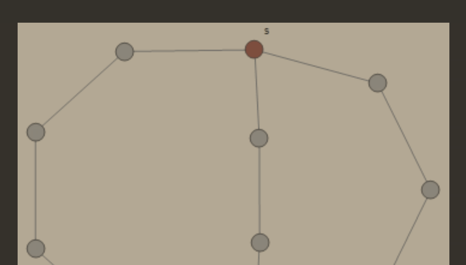
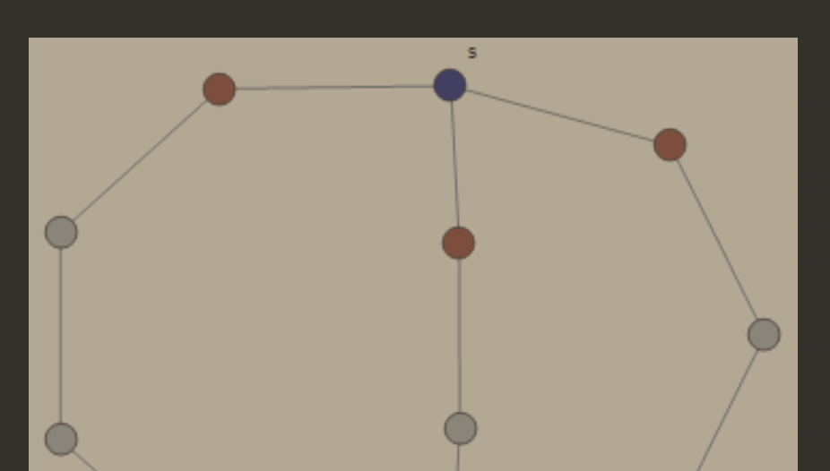
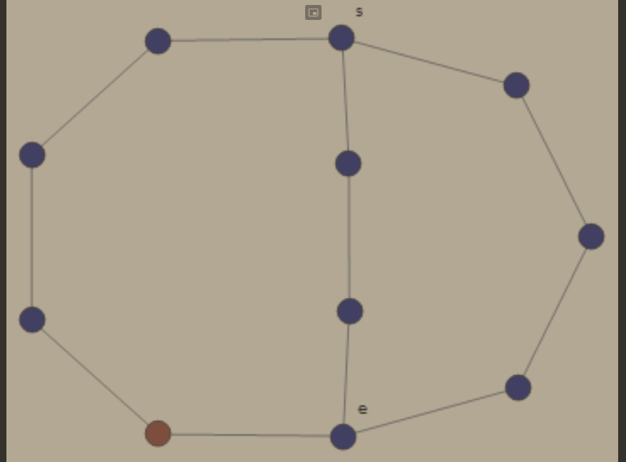

Fakt #1
Załóżmy, że G jest lasem o k składowych.
Wówczas ∣E(G)∣=∣V(G)∣−k.
Dowód Faktu #1
Niech X1,…,Xk będą składowymi spójnymi lasu G. Wtedy G[Xi]=(Xi,E ∩ [Xi]2) jest drzewem.
Zatem ∣E(G)∣=i=1∑k∣∣∣∣E(G[Xi])∣∣∣∣=i=1∑k(∣∣∣∣V(G[Xi])∣∣∣∣−1)=⋯=∣∣∣E(G)∣∣∣−k
Twierdzenie (Cayley)
Niech n≥2.
Zbiór wszystkich drzew na zbiorze {1,…} istnieje nn−2 drzew.
Istnieje wiele dowodów tego twierdzenia. Najbardziej obrazowym jest dowód używający ciągów Prüfera.
Dowód Twierdzenia Cayleya z ciągami Prüfera
Pokażemy, że możemy przejść z drzewa mającego n wierzchołków do ciągu (a1,a2,…,an−2) gdzie ∀i∈{1…n−2} ai∈{1…n}. Jeśli pokażemy taką zależność udowodnimy powyższe twierdzenie jako, że takich ciągów jest dokładnie nn−2.
Dla n∈{1,2} jest OK.
Mamy drzewo T posiadające n wierzchołków oraz (narazie) pusty ciąg P.
Niech b1 będzie najmniejszą liczbą będącą label-em liścia drzewa T, za to a1 będzie liczbą będącą label-em sąsiada tego wierzchołka z label-em b1.
Usuwamy wierzchołek z label-em b1 i krawędź łączącą go z resztą T i do ciągu P append-ujemy a1.
Powtarzamy proces, aż nie otrzymamy P=(a1,a2,…,an−2) a drzewo T będzie K2 (będzie miało tylko dwa wierzchołki).
Teraz w drugą stronę.
Mamy ciąg P=(a1,a2,…,an−2) oraz pusty graf T.
Niech b1 będzie najmniejszą liczbą ∈{1…n}, która nie występuje ciągu P i połączmy ze sobą wierzchołki a1 oraz b1.
Usuwamy a1 z P oraz usuwamy b1 z naszego alfabetu liczb A={1…n}.
Czyli teraz A={1…n}∖{b1}.
Powtarzamy proces aż nie wykorzystamy wszystkich elementów ciągu P.
Zatem, pokazaliśmy proces przejścia z drzewa do ciągu Prüfera oraz na odwrót co kończy dowód.
■
Bardzo obrazowo i klarownie dowód został przedstawiony przez dr Sarada Herke tu oraz tutaj.
Definicje rzędy wierzchołków
Mamy graf G.
Minimalny rząd wierzchołka
δ(G)=min{deg(x): x∈V(G)}
Średni rząd wierzchołka
d(G)=∣V(G)∣∑x∈V(G)deg(x)
Maksymalny rząd wierzchołka
Δ(G)=max{deg(x): x∈V(G)}
Oczywiście mamy: δ(G)≤d(G)≤Δ(G)
Definicje w grafie spójnym
Mamy spójny graf G.
Ekscentryczność wierzchołka
v∈V(G)
ecc(v)=max{d(v,y): y∈V(G)}
Algorytm wyznaczania ecc wierzchołka
Promień grafu
min{ecc(x): x∈V(G)}
Średnica grafu
max{d(x,y): x,y∈V(G)}
Algorytm wyznaczania ekscentryczności wierzchołka
Zakładamy, że dla każdego wierzchołka x mamy metodę wyznaczania listy jego sąsiadów N(x).
INPUT : v∈V
OUTPUT : ecc(v)
L = 0
visited = [v]
active = N(v)
while active != []:
L += 1 # (1)
visited += active
active = [y for x in active for y in N(x) if y not in visited]
return L
Zauważmy, że po operacji (1) mamy active ={x∈V(G): d(v,x)=L} przez cały czas działania pętli.
Metodę tę nazywamy metodą „przeszukiwania grafu wszerz”.
  
Powyższa metoda została opisana również na wykładzie AiSD